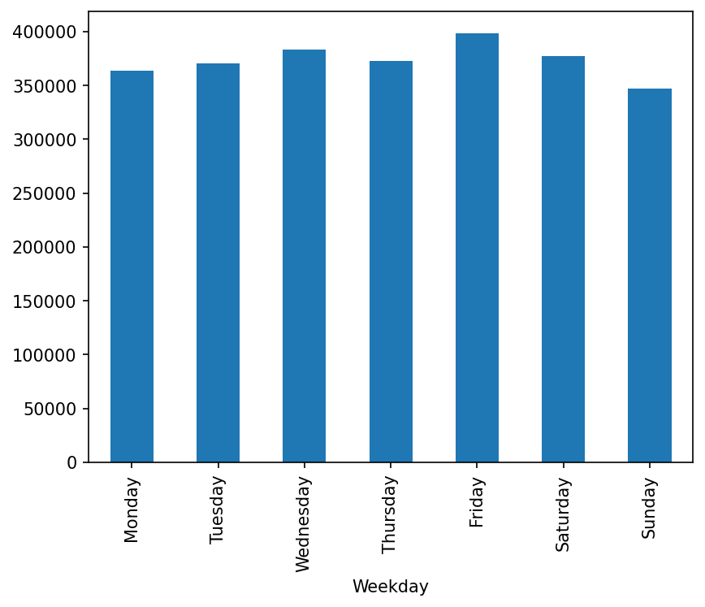

Yearly Crime Trends
A static matplotlib figure showing how total crime changed over time.

Hourly Crime Patterns
An interactive Plotly visualization for exploring crime across hours of the day.
Open full chartThis website presents static and interactive visualizations created during the course. The goal is to explore patterns in San Francisco crime data across time, category, and geography.
A static matplotlib figure showing how total crime changed over time.

An interactive Plotly visualization for exploring crime across hours of the day.
Open full chart